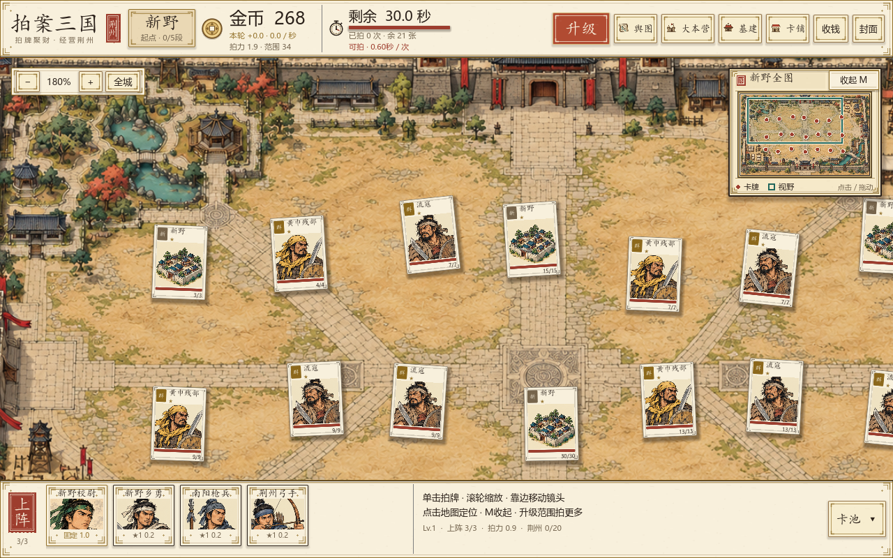

拍案三国 · v2.5 · 2026.10.10
UI 表现强化 · 题匾、纸签与朱砂按钮
把已确认效果图中的古典界面语言落到实机：加强主界面的信息层级、边框与按钮反馈，重新整理升级页，让当前等级、升级收益和购买状态一眼可读。
实机画面 · 点击切换

均为 Godot 实机截图，点击大图查看原尺寸。v2.4 截图为金币 0、剩余 29.7 秒；新版主界面为金币 268、剩余 30.0 秒。两张用于比较 UI 样式，游戏状态并不完全相同。收起地图图还展示了不同镜头位置与升级后的范围数值。
本轮强化的 UI
先看清正在发生什么
黑墨题匾与城名签建立层级，铜钱配大金币数字，倒计时独立分组，朱砂按钮直达升级。纸框有统一质感
纸纹、墨金双框、角饰与投影贯穿上下栏、相机控件、小地图和营地窗口。升级收益直接可读
插画、等级签与纸券数据分组呈现；收益前后、价格、选中状态与购买条件明确。
黑墨题匾与城名签建立层级，铜钱配大金币数字，倒计时独立分组，朱砂按钮直达升级。纸框有统一质感
纸纹、墨金双框、角饰与投影贯穿上下栏、相机控件、小地图和营地窗口。升级收益直接可读
插画、等级签与纸券数据分组呈现；收益前后、价格、选中状态与购买条件明确。
| 界面部位 | 表现与状态 |
|---|---|
| 主 HUD | 标题改为墨色题匾与朱砂印章，城名独立纸签；金币和剩余时间提升字号与对比，增加直达升级入口。 |
| 边框与按钮 | 复用纸纹与代码绘制的双线角饰，统一墨线、金线和阴影。按钮区分正常、悬停、按压、禁用与焦点状态。 |
| 上阵栏与卡池 | 紧凑卡槽增加纸框、角饰与悬停反馈，卡池入口跟随统一皮肤；保留肖像、名字和状态。 |
| 升级四卡 | 插画顶部放等级签，当前选中项用朱砂框与标签；可升级、金币不足、待解锁、满级使用清晰状态。纸券展示当前值、升级后值与收益，底部按钮展示价格或金币缺口。 |
| 营地窗口 | 外框、标题和继续拍击按钮统一样式。升级页移除底部重复的“去升级”入口。 |
| 右上角小地图 | 强化题签、朱砂图印和折叠入口状态；保持 220×185 展开、86×34 收起。M、标题与按钮继续控制收放，点击或拖动定位。 |
这轮围绕 UI 实装，复用既有插画与 art_v3 纸纹；没有新生成图片。城池背景、拍击伤害、冷却、金币收益与升级价格沿用现有数值。

验证记录
| 检查 | 结果 | 记录 |
|---|---|---|
| 1280×800 实际 UI 交互 | 27 / 27 | GUI 日志 |
| 1280×720 实际 UI 交互 | 27 / 27 | GUI 日志 |
| 升级页回归 | 160 / 160 | 升级日志 |
| 城池探索回归 | 208 / 208 | 探索日志 |
| 增量循环回归 | 438 / 438 | 增量日志 |
| 印刷美术回归 | 5569 / 5569 | 印刷日志 |
| 真实卡池拖放 | G13 成功上阵 | 拖放日志 |
四组回归共 6375 项，失败 0 项；800 与 720 高度的实际 UI 交互各 27 项通过，包含确认升级页隐藏重复入口。实机截图与输入验证使用独立测试存档，文字、控件、价格与状态均已目视复核。